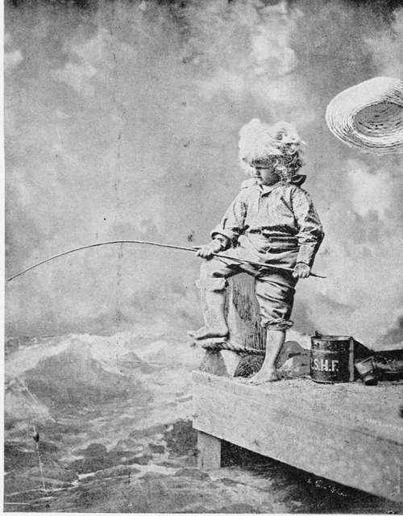

The Crappie-Pomoxis Annularis (Rafinesque)
Description
This section is from the book "American Game Fishes", by W. A. Perry. Also available from Amazon: American Game Fishes: Their Habits, Habitat, and Peculiarities; How, When, and Where to Angle for Them.
The Crappie-Pomoxis Annularis (Rafinesque)
Description
Body elongate, the depth usually about 2 1-2-in. length of body, the profile more or less strongly S-shaped, owing to the projecting snout, depressed occipital region and strongly prominent, thickened ante-dorsal area; head long,about 3-in. length; the mouth very wide, the mandible being about as long as the pectorals; eye large,about 4-in. head; fin-rays, dorsal VI, 15, the spines varying from V to VII; anal VI, 18, the spines frequently but 5 in number, the number of spines is subject to considerable variation, but the normal number both in dorsal and in anal is six; the proportions of the spines also vary somewhat; lateral line with about 42 scales (36 to 48); color, clear silvery olive, mottled with dark olive green, the green being chiefly on the upper part of the body and having a tendency to form narrow vertical bars; dorsal and caudal mottled with green; anal pale, scarcely marked at all; soft rays of dorsal and anal very high but still lower than in the Calico Bass. This species reaches the height of about a foot. The form varies much with age, large specimens having the body much deeper and more compressed than is the case with young fishes.
The Crappie is one of our best pan-fishes, greedy and voracious as a black Bass, but less active, and giving up the fight at once when the hook is in his jaws. It reaches usually a length of ten or twelve inches, and a pound weight, but there are records of Crappies weighing three pounds.
The home of the Crappie is in the Mississippi valley, especially from St. Louis southward, although it ranges northward to Minnesota. It thrives best in sluggish waters, and is not averse to warm water or even mud. Young Crappies run by thousands into the muddy bayous, and when these ponds and sloughs dry up in the summer, multitudes of these little fishes, with the young of the Large-mouthed Black Bass and others, are left to die.
Snagged.
The Crappie is known by a variety of other names, at different localities within its range. In the Ohio River it is "Bachelor," and sometimes "New Light," or "Campbellite," its advent in certain rivers of Kentucky being reputed to be coincident with the preaching of Alexander Campbell. " Bride Perch" and "Chinquapin Perch" are meaningless names heard on the Mississippi River. Tin-mouth is another name with some shade of appropriateness, while about New Orleans is heard the inexplicable appellation of "Sac-a-lait," also freely applied to the larger Killi-fishes. Of these names Crappie is to be preferred, because it is most widely used, and because it belongs to no other fish.
The Crappie feeds on small fishes and crustaceans. It takes very kindly to life in ponds and with the Calico Bass and the Rock-Bass, it is one of the species best adapted for the stocking of ponds.
Professor Goode quotes from "St. Louis," in the Ameri-, can Angler, the following account of Crappie-fishing near St. Louis:
"Our 'Crappie,' the greatest pan-fish of the West, is highly esteemed by us for the table. We have seen a monster Crappie this spring, weighing over three pounds, taken at Murdock Club Lake, near St. Louis, on the Illinois side. We consider one of one-and-a-half to two pounds a large one. They are taken about logs and tree-tops, on the water's edge in our rivers and sloughs. They are greedy fellows, but as soon as hooked, step right into the boat without a struggle for liberty.
"A gentleman of this place, a member of one of our old French families, who turned the scale at about three-hundred pounds, was noted for his success in Crappie-fishing. He would have his large flat towed to a tree; when, tied to a limb, he would settle himself for the day on a pillow placed in a large split-bottom chair. Hauling his live-box and minnow-pail alongside, he would bait two hooks attached to a strong line, using a weak snell, so that in case the hook should foul, he could break it loose. He used a float and short, stout bamboo rod, and, shaking the bushes a little, 'to stir up the fish, would select an opening and carefully drop on the minnow, two feet below the surface, pass the end of the rods through rings in the side of the boat, light his pipe, and wait for something to happen. It was not long; and after the fun began, it was the same monotonous lifting out of fish, and dropping them into the live-box all the day long, and was continued on the next, until he had brought to creel over three hundred.
"I have always associated in my mind the Crappie, and the love of ease and quiet of our old French inhabitants. Nothing could more truly represent contentment and ease than the picture of this simple-minded old gentleman on his annual Crappie fish at King's Lake."
Continue to:
- prev: The Sacramento Red-Eye-Arckoplitcs Intcrruptus (Girard)
- Table of Contents
- next: The Yellow Perch-Perca Flavesccns (Mitchill)